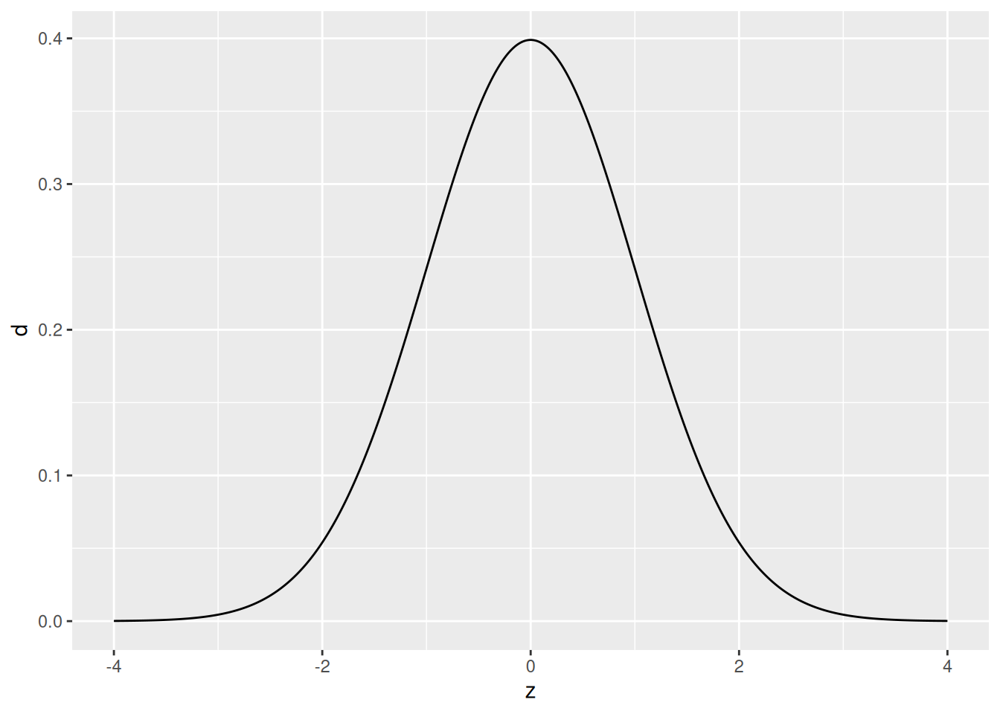
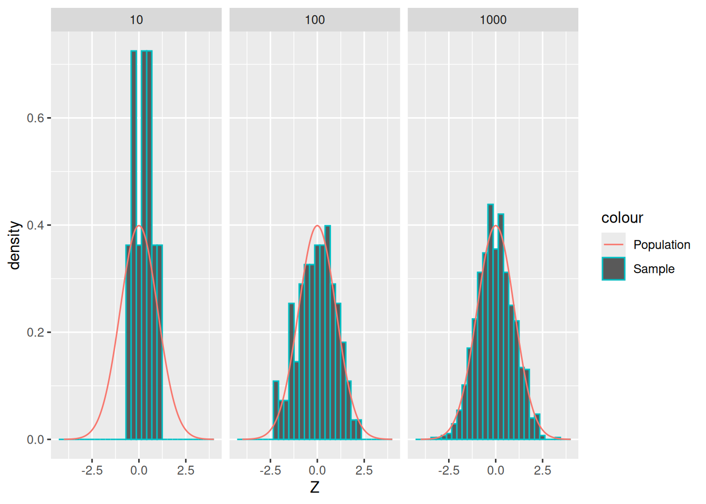
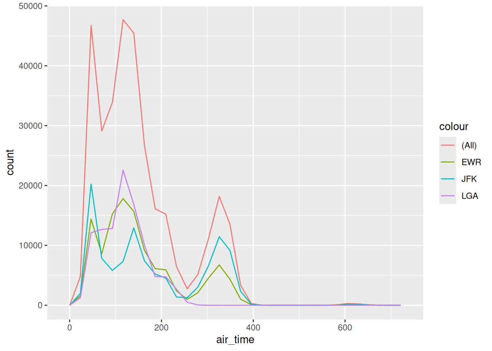
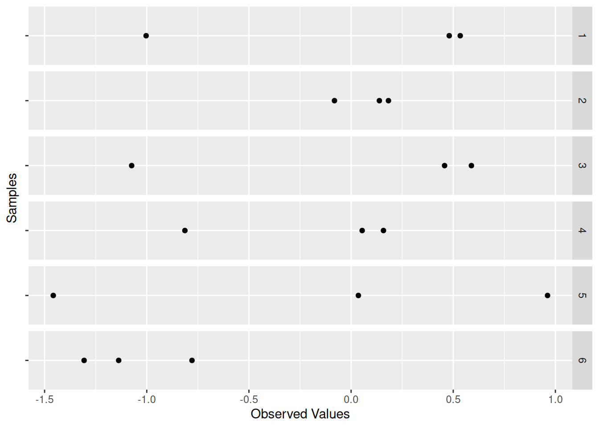
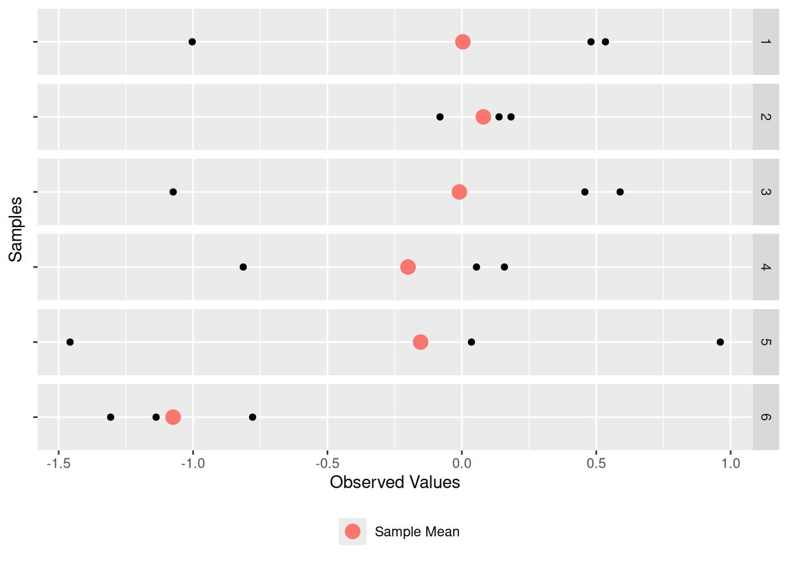
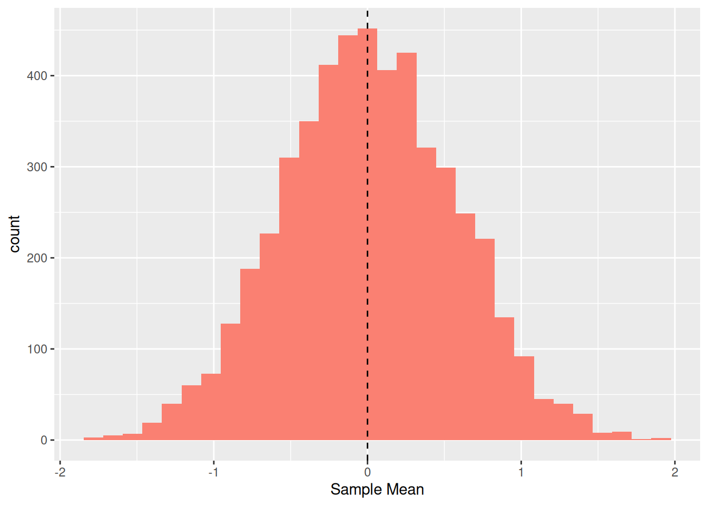
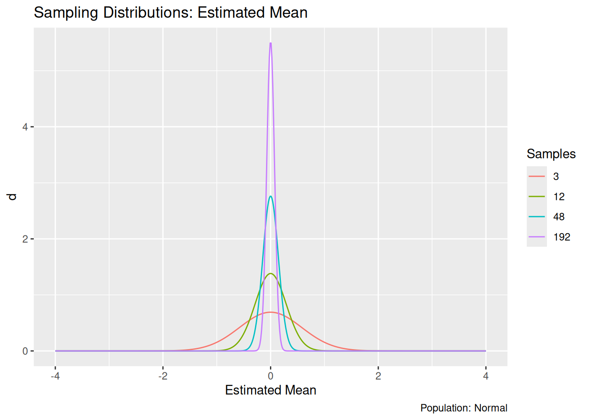
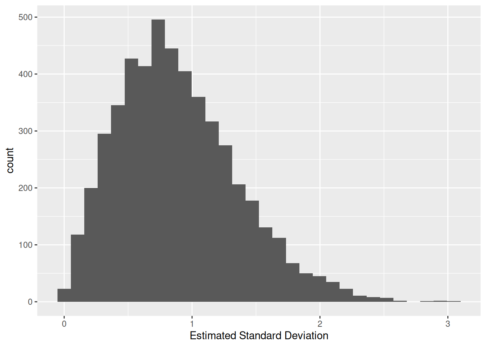
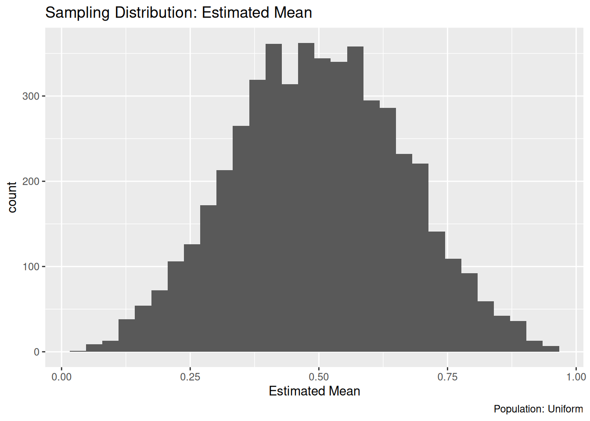

36 Data: Window Functions
Purpose: Window functions are another family of dplyr verbs that are related to aggregates like mean and sd. These functions are useful for building up more complicated filters, enabling aesthetic tricks in plots, and some advanced data wrangling we’ll do next exercise.
Reading: Window Functions, Types of window functions, Ranking functions, and Lead and lag
## ── Attaching core tidyverse packages ──────────────────────── tidyverse 2.0.0 ──
## ✔ dplyr 1.1.4 ✔ readr 2.1.5
## ✔ forcats 1.0.0 ✔ stringr 1.5.1
## ✔ ggplot2 3.5.1 ✔ tibble 3.2.1
## ✔ lubridate 1.9.4 ✔ tidyr 1.3.1
## ✔ purrr 1.0.4
## ── Conflicts ────────────────────────────────────────── tidyverse_conflicts() ──
## ✖ dplyr::filter() masks stats::filter()
## ✖ dplyr::lag() masks stats::lag()
## ℹ Use the conflicted package (<http://conflicted.r-lib.org/>) to force all conflicts to become errors36.1 Lead and Lag
The lead and lag functions simply provide a “shifted” copy of a vector.
## [1] 2 3 4 5 NA## [1] NA 1 2 3 4These are particularly useful for computing things like differences:
## NOTE: No need to edit this; just an example
x <- seq(-1, +1, length.out = 6)
f <- x ^ 2
## Forward finite difference
df_dx <- (lead(f) - f) / (lead(x) - x)
df_dx## [1] -1.600000e+00 -8.000000e-01 2.255141e-16 8.000000e-01 1.600000e+00
## [6] NAMake sure to order your data or use the order_by argument when using lead or lag! GGplot automatically reorders your data when making a line plot, but lead and lag will use the order of the data you provide.
36.1.1 q1 Use a window function modify the following visual to color each segment differently based on whether the period of time was increasing or decreasing.
economics %>%
arrange(date) %>%
mutate(
delta = lead(unemploy, order_by = date) - unemploy,
Positive = delta > 0
) %>%
ggplot(aes(date, unemploy, color = Positive)) +
geom_segment(aes(
xend = lead(date, order_by = date),
yend = lead(unemploy, order_by = date)
))## Warning: Removed 1 row containing missing values or values outside the scale range
## (`geom_segment()`).
36.2 Ranks
The rank functions allow you to assign (integer) ranks to smallest (or largest) values of a vector.
## [1] 1 2 3 4 5## [1] 1 1 3 4 5## [1] 1 1 2 3 4You can use the desc() function (or a negative sign) to reverse the ranking order.
## [1] 4 5 3 2 1## [1] 4 4 3 2 1## [1] 4 4 3 2 1I find it difficult to remember how the rank functions behave, so I created the following visual to help remind myself how they function..
## NOTE: No need to edit this; just an example
set.seed(101)
tribble(
~x, ~y,
0, 0,
1, 0,
1, 1,
0, 2,
2, 2,
0, 3,
2, 3,
3, 3
) %>%
mutate(
rk_row = row_number(y),
rk_min = min_rank(y),
rk_dense = dense_rank(y)
) %>%
pivot_longer(
names_to = "fcn",
names_prefix = "rk_",
values_to = "rk",
cols = c(-x, -y)
) %>%
ggplot(aes(x, y)) +
geom_point(size = 4) +
geom_point(
data = . %>% filter(rk <= 3),
size = 3,
color = "orange"
) +
geom_label(aes(label = rk), nudge_x = 0.2, nudge_y = 0.2) +
facet_wrap(~fcn) +
theme_minimal() +
theme(panel.border = element_rect(color = "black", fill = NA, size = 1)) +
labs(
x = "",
y = "Minimum Three Ranks"
)## Warning: The `size` argument of `element_rect()` is deprecated as of ggplot2 3.4.0.
## ℹ Please use the `linewidth` argument instead.
## This warning is displayed once every 8 hours.
## Call `lifecycle::last_lifecycle_warnings()` to see where this warning was
## generated.
36.2.1 q2 Use a rank function to filter the largest 3 hwy values and all vehicles that have those values.
## # A tibble: 4 × 11
## manufacturer model displ year cyl trans drv cty hwy fl class
## <chr> <chr> <dbl> <int> <int> <chr> <chr> <int> <int> <chr> <chr>
## 1 toyota corolla 1.8 2008 4 manua… f 28 37 r comp…
## 2 volkswagen jetta 1.9 1999 4 manua… f 33 44 d comp…
## 3 volkswagen new beetle 1.9 1999 4 manua… f 35 44 d subc…
## 4 volkswagen new beetle 1.9 1999 4 auto(… f 29 41 d subc…Use the following test to check your work.
## [1] TRUE## [1] "Nice!"Purpose: Often, our data do not include all the facts that are relevant to the decision we are trying to make. Statistics is the science of determining the conclusions we can confidently make, based on our available data. To make sense of this, we need to understand the distinction between a sample and a population, and how this distinction leads to estimation.
Reading: Statistician proves that statistics are boring
Topics: Population, sample, estimate, sampling distribution, standard error
## ── Attaching core tidyverse packages ──────────────────────── tidyverse 2.0.0 ──
## ✔ dplyr 1.1.4 ✔ readr 2.1.5
## ✔ forcats 1.0.0 ✔ stringr 1.5.1
## ✔ ggplot2 3.5.1 ✔ tibble 3.2.1
## ✔ lubridate 1.9.4 ✔ tidyr 1.3.1
## ✔ purrr 1.0.4
## ── Conflicts ────────────────────────────────────────── tidyverse_conflicts() ──
## ✖ dplyr::filter() masks stats::filter()
## ✖ dplyr::lag() masks stats::lag()
## ℹ Use the conflicted package (<http://conflicted.r-lib.org/>) to force all conflicts to become errorsWhen using descriptive statistics to help us answer a question, there are (at least) two questions we should ask ourselves:
- Does the statistic we chose relate to the problem we care about?
- Do we have all the facts we need (the population) or do we have limited information (a sample from some well-defined population)?
We already discussed (1) by learning about descriptive statistics and their meaning. Now we’ll discuss (2) by learning the distinction between populations and samples.
36.3 Population
Let’s start by looking at an artificial population:
## NOTE: No need to change this!
tibble(z = seq(-4, +4, length.out = 500)) %>%
mutate(d = dnorm(z)) %>%
ggplot(aes(z, d)) +
geom_line()
Here our population is an infinite pool of observations all following the standard normal distribution. If this sounds abstract and unrealistic, good! Remember that the normal distribution (and indeed all named distributions) are abstract, mathematical objects that we use to model real phenomena.
Remember that a sample is a set of observations “drawn” from the population. The following is an example of three different samples from the same normal distribution, with different sample sizes.
## NOTE: No need to change this!
set.seed(101)
tibble(z = seq(-4, +4, length.out = 500)) %>%
mutate(d = dnorm(z)) %>%
ggplot() +
geom_histogram(
data = map_dfr(
c(10, 1e2, 1e3),
function(n) {tibble(Z = rnorm(n), n = n)}
),
mapping = aes(Z, y = ..density.., color = "Sample")
) +
geom_line(aes(z, d, color = "Population")) +
facet_grid(~n)## Warning: The dot-dot notation (`..density..`) was deprecated in ggplot2 3.4.0.
## ℹ Please use `after_stat(density)` instead.
## This warning is displayed once every 8 hours.
## Call `lifecycle::last_lifecycle_warnings()` to see where this warning was
## generated.## `stat_bin()` using `bins = 30`. Pick better value with `binwidth`.
As we’ve seen before, as we draw more observations (a larger sample), their histogram tends to look more like the underlying population.
Terminology alert: Engineers often use the word “sample” to mean “a single observation.” However, data scientists and statisticians use “sample” to mean “a set of multiple observations.” Be careful when reading stuff in the wild!
Now let’s look at a real example of a population:
## NOTE: No need to change this!
flights %>%
ggplot() +
geom_freqpoly(aes(air_time, color = "(All)")) +
geom_freqpoly(aes(air_time, color = origin))## `stat_bin()` using `bins = 30`. Pick better value with `binwidth`.## Warning: Removed 9430 rows containing non-finite outside the scale range
## (`stat_bin()`).## `stat_bin()` using `bins = 30`. Pick better value with `binwidth`.## Warning: Removed 9430 rows containing non-finite outside the scale range
## (`stat_bin()`).
This is the set of all flights originating from EWR, LGA, and JFK in 2013, in terms of their air_time. Note that this distribution is decidedly not normal; we would be foolish to try to model it as such!
As we saw in the reading, the choice of the “correct” population is not an exercise in math. This is a decision that you must make based on the problem you are trying to solve. For instance, if we care about all flights into the NYC area, then the (All) population is correct. But if we care only about flights out of LGA, the population is different. No amount of math can save you if you can’t pick the appropriate population for your problem!
When your data are not the entire population, any statistic you compute is an estimate.
36.4 Estimates
When we don’t have all the facts and instead only have a sample, we perform estimation to extrapolate from our available data to the population we care about.
The line of thinking is that a sample is just the data we happened to get. If we were to repeat data collection, we would get a different sample, hence a different estimate. If we repeat data collection and analysis many times, we will get a sense for how variable our estimate tends to be.
The following code draws multiple samples (multiple sets, each with multiple observations) from a standard normal of size n_observations, and does so n_samples times. We’ll visualize these data in a later chunk.
## NOTE: No need to change this!
n_observations <- 3
n_samples <- 5e3
df_sample <-
map_dfr(
1:n_samples,
function(id) {
tibble(
Z = rnorm(n_observations),
id = id
)
}
)Some terminology:
- We call a statistic of a population a population statistic; for instance, the population mean. A population statistic is also called a parameter.
- We call a statistics of a sample a sample statistic; for instance, the sample mean. A sample statistic is also called an estimate.
The chunk compute-samples generated n_samples = 5e3 of n_observations = 3 each. Each sample is an “alternative universe” where we happened to pick 3 particular values. The following chunk visualizes just the first few samples:
df_sample %>%
filter(id <= 6) %>%
ggplot(aes(Z, "")) +
geom_point() +
facet_grid(id ~ .) +
labs(
x = "Observed Values",
y = "Samples"
)
Every one of these samples has its own sample mean; let’s add that as an additional point:
df_sample %>%
filter(id <= 6) %>%
ggplot(aes(Z, "")) +
geom_point() +
geom_point(
data = . %>% group_by(id) %>% summarize(Z = mean(Z)),
mapping = aes(color = "Sample Mean"),
size = 4
) +
scale_color_discrete(name = "") +
theme(legend.position = "bottom") +
facet_grid(id ~ .) +
labs(
x = "Observed Values",
y = "Samples"
)
Thus, there is a “red dot” associated with each of the 5,000 samples. Let’s visualize the individual sample mean values (red dots above) as a histogram:
## NOTE: No need to change this!
df_sample %>%
group_by(id) %>%
summarize(mean = mean(Z)) %>%
ggplot(aes(mean)) +
geom_histogram(fill = "salmon") +
geom_vline(xintercept = 0, linetype = 2) +
labs(
x = "Sample Mean"
)## `stat_bin()` using `bins = 30`. Pick better value with `binwidth`.
Remember that the standard normal has population mean zero (vertical line); the distribution we see here is of the sample mean values. These results indicate that we frequently land near zero (the true population value) but we obtain values as wide as -2 and +2. This is because we have limited data from our population, and our estimate is not guaranteed to be close to its population value. As we gather more data, we’ll tend to produce better estimates.
To illustrate the effects of more data, I use a little mathematical theory to quickly visualize the same distribution, but at different sample sizes.
## NOTE: No need to change this!
map_dfr(
c(3, 12, 48, 192),
function(n) {
tibble(z = seq(-4, +4, length.out = 500)) %>%
mutate(
d = dnorm(z, sd = 1 / sqrt(n)),
n = n
)
}
) %>%
ggplot() +
geom_line(aes(z, d, color = as.factor(n), group = as.factor(n))) +
scale_color_discrete(name = "Samples") +
labs(
x = "Estimated Mean",
title = "Sampling Distributions: Estimated Mean",
caption = "Population: Normal"
)
As we might expect, the distribution of estimated means concentrates on the population mean (zero) as we increase the sample size \(n\). As we gather more data, our estimate has a greater probability of landing close to the true value.
The distribution for an estimate is called a sampling distribution; the visualization above is a lineup of sampling distributions for the estimated mean. It happens that all of those distributions are normal. However, the sampling distribution is not guaranteed to look like the underlying population. For example, let’s look at the sample standard deviation.
## NOTE: No need to change this!
df_sample %>%
group_by(id) %>%
summarize(sd = sd(Z)) %>%
ggplot(aes(sd)) +
geom_histogram() +
labs(
x = "Estimated Standard Deviation"
)## `stat_bin()` using `bins = 30`. Pick better value with `binwidth`.
Note that this doesn’t look much like a normal distribution. This should make some intuitive sense: The standard deviation is guaranteed to be non-negative, so it can’t possibly follow a normal distribution, which can take values anywhere from \(-\infty\) to \(+\infty\).
36.4.1 q1 Sample a uniform distribution
Modify the code below to draw samples from a uniform distribution (rather than a normal). Describe (in words) what the resulting sampling distribution looks like. Does the sampling distribution look like a normal distribution?
## TASK: Modify the code below to sample from a uniform distribution
df_samp_unif <-
map_dfr(
1:n_samples,
function(id) {
tibble(
Z = runif(n_observations),
id = id
)
}
)
df_samp_unif %>%
group_by(id) %>%
summarize(stat = mean(Z)) %>%
ggplot(aes(stat)) +
geom_histogram() +
labs(
x = "Estimated Mean",
title = "Sampling Distribution: Estimated Mean",
caption = "Population: Uniform"
)## `stat_bin()` using `bins = 30`. Pick better value with `binwidth`.
Observations:
36.5 Intermediate conclusion
A sampling distribution is the distribution for a sample estimate. It is induced by the population, but is also a function of the specific statistic we’re considering. A sampling distribution tells us how precise our estimate is.
36.6 Standard Error
The standard deviation of a sampling distribution gets a special name: the standard error. The standard error of an estimated mean is
\[\text{SE} = \sigma / \sqrt{n}.\]
This is a formula worth memorizing; it implies that doubling the precision of an estimated mean requires quadrupling the sample size. It also tells us that a more variable population (larger \(\sigma\)) will make estimation more difficult (larger \(\text{SE}\)).
The standard error is a convenient way to summarize the accuracy of an estimation setting; the larger our standard error, the less accurate our estimates will tend to be.
36.6.1 q2 Practice computing standard error
Compute the standard error for the sample mean under the following settings. Which setting will tend to produce more accurate estimates?
Use the following tests to check your work.
## [1] TRUE## [1] TRUE## [1] "Nice!"Observations:
- Setting q2.1 will tend to be more accurate because its standard error is lower
Two notes:
- Note the language above: The standard error tells us about settings (population \(\sigma\) and sample size \(n\)), not estimates themselves. The accuracy of an individual estimate would depend on \(\hat{\mu} - \mu\), but we in practice never know \(\mu\) exactly. The standard error will tell us how variable \(\hat{\mu}\) will be on average, but does not give us any information about the specific value of \(\hat{\mu} - \mu\) for any given estimate \(\hat{\mu}\).
The standard error gives us an idea of how accurate our estimate will tend to be, but due to randomness we don’t know the true accuracy of our estimate.
- Note that we used the population standard deviation above; in practice we’ll only have a sample standard deviation. In this case we can use a plug-in estimate for the standard error
\[\hat{\text{SE}} = s / \sqrt{n},\]
where the hat on \(\text{SE}\) denotes that this quantity is an estimate, and \(s\) is the sample standard deviation.
36.6.2 q3 Estimate standard error
Compute the sample standard error of the sample mean for the sample below. Compare your estimate against the true value se_q2.1. State how similar or different the values are, and explain the difference.
## NOTE: No need to change this!
set.seed(101)
n_sample <- 20
z_sample <- rnorm(n = n_sample, mean = 2, sd = 4)
## TASK: Compute the sample standard error for `z_sample`
se_sample <- sd(z_sample) / sqrt(n_sample)Use the following tests to check your work.
## NOTE: No need to change this!
assertthat::assert_that(
assertthat::are_equal(
se_sample,
sd(z_sample) / sqrt(n_sample)
)
)## [1] TRUE## [1] "Well done!"Observations:
- I find that
se_sampleis about 3/4 of the true value, which is a large difference. - The value
se_sampleis just an estimate; it is inaccurate due to sampling.
36.7 Fast Summary
The population is the set of all things we care about. No amount of math can help you here: You are responsible for defining your population. If we have the whole population, we don’t need statistics!
When we don’t have all the data from the population, we need to estimate. The combined effects of random sampling, the shape of the population, and our chosen statistic all give rise to a sampling distribution for our estimated statistic. The standard deviation of the sampling distribution is called the standard error; it is a measure of accuracy of the sampling procedure, not the estimate itself.